Before you begin selecting specific wellness programs to offer your workforce (e.g. Nutrition Coaching, Tobacco Cessation etc.), it is best to collect data that will point you in the right direction. The ReadySet Wellness module contains a comprehensive Wellbeing Assessment (HRA), the ability to collect biometric screening information, a comprehensive personalized wellness strategy letter and the analytics you need to determine what programs to offer and the likelihood of success of these programs. Recognizing these changes enables the promotion and encouragement of improved lifestyle choices which in turn results in better healthcare cost management.
The personal health questions in the HRA survey are GINA (Genetic Information Nondiscrimination Act) compliant when asked as a part of a voluntary wellness program. The personalized wellness strategy letter includes recommendations that are triggered by the system’s health risk assessment settings and the biometrics screening results if available. The Biometric Charting form can be used to collect biometric data and physical information, such as height and weight, as well as cholesterol, glucose, heart rate, BMI and blood pressure.
The first step is to decide what your wellness program entails. For example:
Participants are required to have their biometrics completed by your EHS department or from an outside source, followed by completing an HRA survey. or
Participants are not required to have biometrics completed, but will complete an HRA Survey.
This topic will guide you through how to setup, launch, and review the data for your wellness program using ReadySet.
Sources: American Cancer Society Guidelines for Early Detection of Cancer; U.S. National Library of Medicine; National Institutes of Health (NIH); The Centers for Disease Control and Prevention (CDC); The Mayo Clinic and The National Safety Council.
Components
Wellness Program Consent Form Template – Allows EHS to obtain consent from workers to participate in the wellness program and/or to obtain a biometric screening.
Biometric Screening Form – Allows the clinician to capture the most common biometric screening data elements including laboratory results.
Health Risk Assessment Survey – A participant-facing survey used to capture information related to the person's current health, medical examination dates, lifestyle, readiness to change, safety and program interests.
HRA Wellness Results Letter (My Health) – A participant-facing letter that combines the biometric data and HRA information to provide the participant with information related to their own health and how to take next steps to achieve excellent health. It contains static information that reflects the most recent national standards in health as well as variable information according to how they answered the questions in the HRA survey.
Reports
Biometric Screening Details – All data collected from the biometric screening form. The report outputs in .csv format that can be opened with Excel or uploaded into other databases.
Biometric Screening Summary– The average, minimum and maximum values of the majority of the Biometric Screening values. This report can be grouped by age, gender or all participants. You can also use filters for location, department, employment status, etc. The report allows the end user to see wellness trends in their participant population. The report outputs in .csv format.
HRA Summary – A summary report that provides the clinician with aggregate data from the HRA survey. The report displays every question and answer from the HRA with the number and percentage of participants who selected each answer. Additionally, it displays the total number of surveys completed in the selected program year. The report outputs in .pdf format.
HRA Details – All HRA survey data. Only available to those who have the Wellness role, as this data is considered private. The report outputs in .csv format.
Below are two suggested Wellness workflows that work well with ReadySet. Remember that there will be steps to complete before the actual launch date.
Option 1: A two-part process using ReadySet C3/Mass Emailand Initialize Programs to launch both steps. Part 1 is the call to action for participants to obtain their biometrics either through EHS or an outside source. Part 2 is the initialization of the HRA (Health Risk Assessment) Survey. The employee will log into their My Health and complete the HRA Survey, with or without entering all biometric data. When complete, the employee will have an HRA Wellness Results Letter that provides the employee information related to their own health and how to take steps to achieve excellent health. If the employee does not enter their biometric information, then the letter will be less robust.
Option 2: Start with the launch of the HRA Survey. The participants can obtain their biometrics from an outside source and input those results when completing the HRA Survey. When complete, the HRA Wellness Results Letter will be available and incorporate the biometric and HRA data.
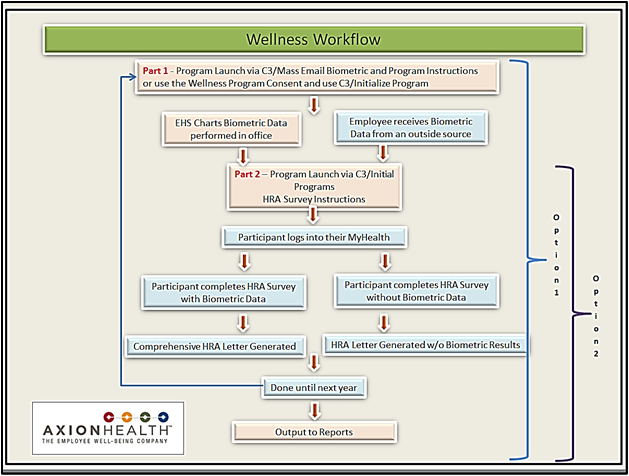
Blue highlighted boxes are employee processes; orange highlighted boxes are EHS processes.
2: Set Up Your Program Specifics in ReadySet
Before you can start your Wellness program, there are a few steps that must be completed.
Note: It is recommended to give yourself two months before your expected or planned Wellness go live date.
Create or Edit Axion-Supplied Wellness Notifications
Below are two examples of possible Health Risk Wellness notifications used when sending your participants emails through the C3/Mass Emailand Initialize Programs. Follow the workflow above for the timing of when these notifications are sent.
Part 1: Example email to participants that give the program instructions to obtain biometrics (labs etc.):
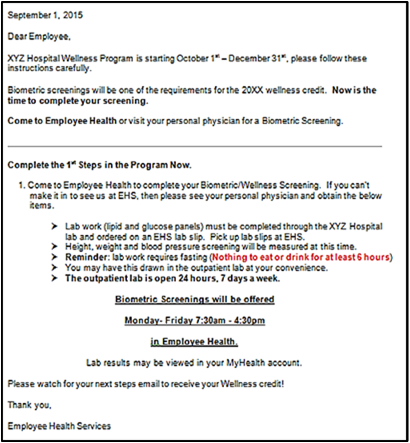
Part 2: Example email to participants giving instructions to complete the HRA survey:
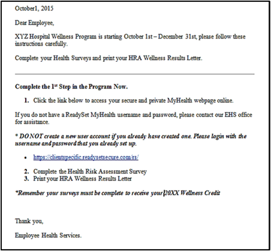
Set Up Your HRA Program Period (must be done at least 24 hours before launch)
The HRA Program Periodis used to control which test/survey results will be used in reporting of year-over-year results. You enter the start and end dates of your program that have been determined per your policies and procedures. The dates are entered in the Client Admin > Preferences.
The HRA Program Period must have a start and end date. You cannot have two program periods that overlap dates. Past dates may not be entered, and you cannot change dates that are in the past. You can delete an HRA Program Period only if there are no surveys or tests associated with that program period. Past Program Periods will be hidden but can be viewed by clicking the Show Past Periods box.
Click theClient Admin tab.
Click Preferences.
Click Program Period (left menu).
Click HRA (middle column).
Click New.
Enter the Start Date, End Date and Description.
Click Save.
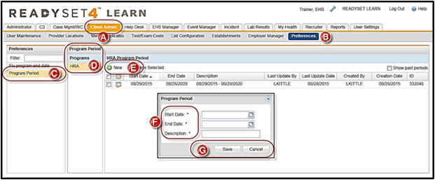
You can change the End Date if it is before the entered end date if you want to extend your HRA Program Period.
Define Wellness Visit Types
The “Visit Type” is a bundle of charting forms allowing easy access to queue up forms and/or schedule appointments that all relate to a specific program.
A Wellness Visit Typemight include the charting forms listed below but you may want other forms, including:
Check In/Out Form (for productivity tracking)
Biometric Screening
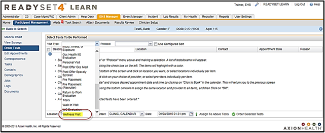
3. Validate Your Wellness Program Setup with Customer Support
Customer Support will help you verify your program setup to ensure a successful program roll out. To validate your program,
Contact Customer Support to open a ticket to add your Wellness Notifications that will be deployed when using the C3/Mass Email orInitialize Programs (see examples above).
Customer Support will confirm that you have set up your HRA Program Period (instructions above).
Customer Support can also set up a Wellness Visit Typethat will include the Biometric Screening charting form, or if you want the form can be automatically ordered with the Part 1: C3 deploy, discussed above.
4. Launch Your Wellness Program
After your initial setup is complete, you are ready to start your Wellness Program. Option 1 from the Workflow section is used in the example below.
Part 1 Step 1: Send email notification to participating staff – “get your Biometric Screening”
Part 1 Step 2: Clinic: Document Biometric Screenings
Part 2 Step 1: Send email notification to participating staff - “complete HRA Survey”
Part 2 Step 2: Participating staff complete Individual HRA Survey and generate personalized assessment
Assess the progress of your program using the report tools
Part 1: Biometric Screening Launch via C3 Mass Email
Send email notification to participating staff “get your Biometric Screening”
Click on the C3 tab.
Click Mass Email.
Click New Notification to open the Notification dialog box.
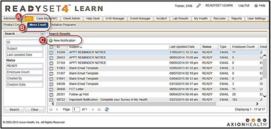
In the Notification Type field, select the correct option (we used Annual Biometric Screening).
Confirm the information located in the body of the email.
Click Save.
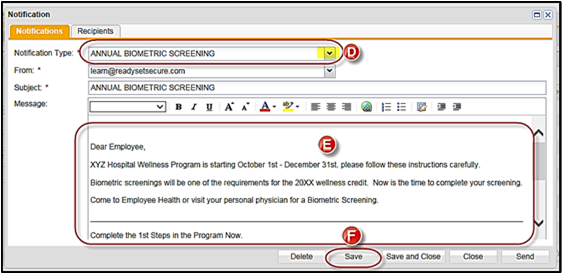
Click the Recipients tab.
Use either the Distribution Listsoption or the Add Employee(s) option. The Distribution List option provides several easy choices. This example uses “Active Employees with Population Type = Employee”.
Click Add From List. This group of employees will import into the Send to these employeessection.
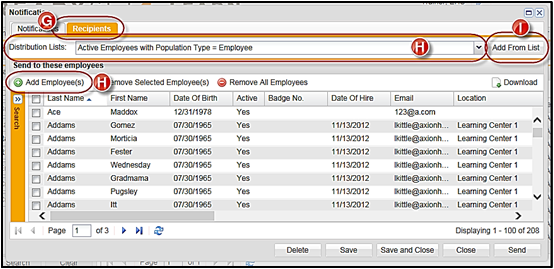
You have the following options in this section:
Add Employee(s) – allows you to search by criteria such as Last Name, Dept., Facility, Occupation etc.
Remove Selected Employee(s) – allows you to remove participants from the “send to” group
Remove All Employees– allows you to remove the entire “ send to” group
Click Send.
A message stating, “You are about to send a notification to ## employees, are you sure?” will appear.
If you click Yes, the emails are sent immediately.
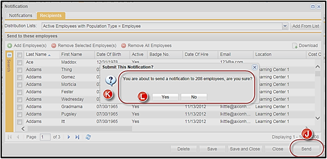
You have the following options after:
Delete – deletes the notification
Save – saves current information
Save and Close – saves current information and takes you back to the Search Results screen
Close – closes screen
Document the employee’s biometrics using the Biometric Screening Form
Click Order Tests.
Click the Visit Type field.
Complete the order test process.
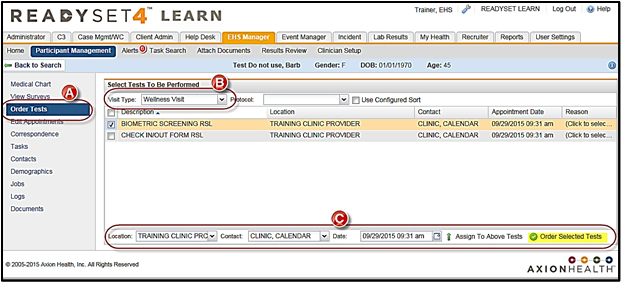
Complete the Biometric Screening form and click Submit Final.
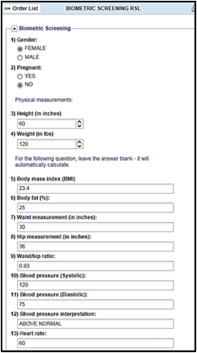
For participants who went to their personal physicians for their biometric screening, they can either give the results to EHS for data entry or enter their results when they are completing the HRA Survey.
Part 2: HRA Survey Launch via C3 Initial Programs
Send email notification to participating staff - “complete HRA Survey”
Click on the C3 tab.
Click Initialize Programs.
Click New Notification to open the Notification dialog box.
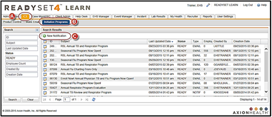
In the Initialization Method field, select the process you will be using:
With Email initializes the survey and ReadySet sends an email
Program Only initializes the survey only (no email sent)
In the Notification Type field, select the correct option (this example uses Annual HRA Survey Launch).
Confirm the information located in the body of the email.
Click Save.
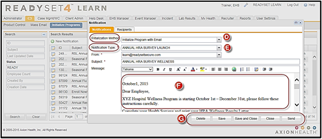
Click the Recipients tab.
Use either the Distribution Listsoption or the Add Employee(s) option. The Distribution List option provides several easy choices. This example uses “Active Employees with Population Type = Employee”.
Click Add From List. This group of employees will import into the Send to these employeessection.
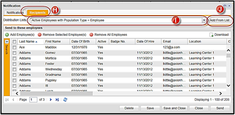
You have the following options in this section:
Add Employee(s) – allows you to search by criteria such as Last Name, Dept., Facility, Occupation etc.
Remove Selected Employee(s) – allows you to remove participants from the “send to” group
Remove All Employees – allows you to remove the entire “send to” group
Click Send.
A message stating, “You are about to send a notification to ## employees, are you sure?” will appear.
If you click Yes, the emails are sent.
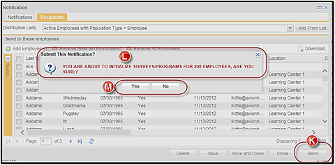
You have the following options after:
Delete – deletes the notification.
Save – saves current information.
Save and Close– saves current information and takes you back to the Search Results screen.
Close – closes screen.
Step 2: Participating staff complete Individual HRA Survey and generate personalized assessment
Your participants will receive an email telling them to log into their My Health and complete the Health Risk Assessment Survey (HRA). If the Biometric Screening was charted in ReadySet, the data will display at the top of the HRA Survey. If the employee saw their own personal physician and the data was not entered into ReadySet, the top section will be blank.
The employee will complete the HRA Surveyusing their biometric data and answering the HRA Survey questions.
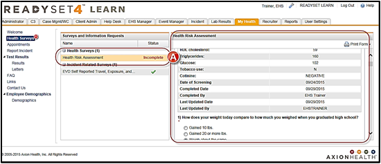
Click Submit Final.
Click Yes to view your assessment resultsletter.
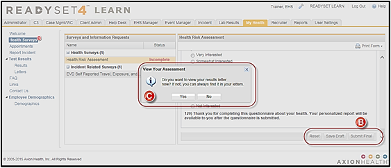
Click Open on the download message.
The employee can now review their Health Risk Assessment Results (HRA) letter.
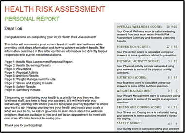
Click Letters in the left menu to view the HRA letter at any time.
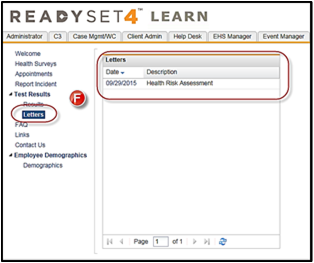
5. Manage Your Program Using Reports
ReadySet provides four reporting methods:
Biometric Screening Details: This is a .csv report of all the data in the biometric screening form.
Biometric Screening Summary: This is a .csv report of the average, minimum and maximum values of the majority of the biometric screening values. The report can be grouped by age, gender, location, etc. The report allows the end user to see wellness trends in their employee population.
HRA Summary: This is a .pdf report that provides a clinician with aggregate data from the HRA survey. The report displays every question and answer from the HRA survey with the number and % of people who selected each answer. It will also display the total number of surveys completed in the selected program year.
HRA Details: This is a .csv report of all the HRA survey data. This report is only available to those who have the Wellness Role as this data is considered private.
Program Specifics
Wellness data from the HRA is private and is only available in aggregate reports to those with EHS Manager role. The HRA Details report is all HRA data and only for those with a Wellness role. HRA data at the individual level can be viewed by anyone with the EHS Manager role and access is tracked as are all parts of the ReadySet system.